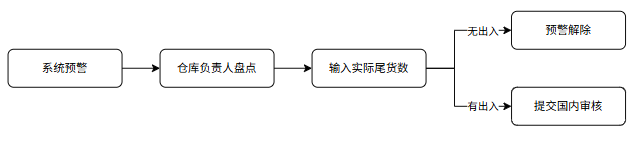

尾货库存预警系统 - PRD (V1.0)
一句话：库存低于 5 件时系统自动提醒 → 仓库负责人去现场数货 → 账对上了就消警，对不上就报国内审核改库存。
一. 背景及目标
1.1 为什么要做
尾货数量少、品种杂，平时没人专门管。系统里显示有货，现场却找不到，客户下单后就缺货、客诉、赔钱。
1.2 现在的问题
| 问题 | 具体表现 |
|---|
| 账实不符 | 系统有库存，仓库里实际没有或放错了 |
| 没人管尾货 | 低库存 SKU 长期不盘点，出问题才发现 |
| 改库存没规矩 | 发现差异后各自改数，说不清、追不回 |
| 客诉成本高 | 客户下单缺货，要取消、补发或赔付 |
1.3 要做到什么
| 目标 | 具体做法 | 谁受益 |
|---|
| 账实一致 | 低库存自动提醒，必须现场核实 | 仓库、客户 |
| 流程有标准 | 预警 → 盘点 → 审核 → 改库存，全程留记录 | 国内运营 |
| 少重复劳动 | 确认过的 SKU，3 个月内不再反复提醒 | 仓库负责人 |
| 降低客诉 | 尾货库存经确认后才正常售卖 | 客服、运营 |
二. 业务流程
2.1 主流程（4 步）
① 系统预警 库存 < 5 件 → 列表标红
② 仓库盘点 负责人去现场数货
③ 提交结果 账实一致 → 消警；不一致 → 提差异单
④ 国内审核 改库存 / 驳回 / 建虚拟库位

2.2 分步说明
| 步骤 | 执行人 | 做什么 | 结果 |
|---|
| ① 自动预警 |
系统 |
每天检查，库存低于阈值就标红提醒 |
生成待盘点任务 |
| ② 现场盘点 |
仓库负责人 |
去货架数货，扫码或勾选确认实物 |
得到实际数量 |
| ③ 提交结果 |
仓库负责人 |
实际数 = 系统数 → 点确认；不等 → 填差异单 |
消警 或 待审核 |
| ④ 国内审核 |
国内管理员 |
看差异单，决定怎么改库存 |
库存更新完成 |
三. 功能需求
3.1 自动预警
| 功能 | 说明（白话） | 默认设置 |
|---|
| 预警阈值 |
库存低于多少件就提醒去盘点 |
5 件，后台可改 |
| 自动标红 |
低于阈值的 SKU 在列表里标红，弹窗提醒 |
每日自动检查 |
| 免重复盘点 |
刚盘完确认 OK 的 SKU，一段时间内不再提醒 |
3 个月，后台可改 |
| 入库重置 |
免盘期间如果又进了货、库存超过阈值，重新纳入监测 |
库存 ≥ 阈值即重置 |
💡 举例：某 SKU 剩 3 件 → 亮红灯 → 盘完确认没问题 → 3 个月内不再提醒 → 中途又进了 20 件 → 重新纳入监测。
3.2 仓库盘点
| 功能 | 说明（白话） | 备注 |
|---|
| 谁能操作 |
只有仓库固定负责人能提交盘点、解除预警 |
其他人只能看 |
| 扫码模式 |
一件一件扫 RFID 标签，系统自动核对 |
适合货少、要精准 |
| 勾选模式 |
扫 SKU 后列出所有 RFID，勾选找不到的 |
适合货多、省时间 |
| 账实一致 |
现场数和系统数一样 → 点确认 → 预警消除 |
进入 3 个月免盘期 |
| 账实不符 |
现场数和系统数不一样 → 填实际数 → 提交差异单 |
推送给国内审核 |
3.3 国内审核
| 操作 | 什么时候用 | 系统怎么做 |
|---|
| 确认修正 |
认可仓库盘的结果 |
把库存改成实际数量 |
| 驳回 |
不认可差异，维持原库存 |
库存不变，必填驳回原因 |
| 创建虚拟库位 |
实物少了但不想直接删账 |
原库位留实盘数；找不到的货移到虚拟库位（不参与拣货） |
所有差异单汇总到国内管理员任务栏，每一步操作都有记录，可以追溯。
四. 角色与权限
| 角色 | 日常做什么 | 权限 |
|---|
| 仓库负责人 |
处理标红预警、去现场盘点 |
提交盘点 ✅ · 提交差异单 ✅ · 解除预警 ✅ |
| 拣货 / 理货员 |
了解哪些 SKU 在预警中 |
查看预警 👁 · 不能提交 |
| 国内管理员 |
审核各仓提交的差异单 |
修正 / 驳回 / 建虚拟库位 ✅ |
| 后台配置员 |
调整预警规则 |
改阈值、改免盘周期 ✅ |
五. 一期范围
| 分类 | 内容 |
|---|
| ✅ 本期做 |
低库存自动预警 · 扫码/勾选盘点 · 国内审核（三种操作）· 虚拟库位拆分 |
| ⏳ 后续做 |
预警看板 · 超期自动催办 · 订单联动禁超卖 · 批量盘点 |
六. 待确认事项
以下 7 项需要业务方确认。如无异议按「建议方案」执行；有修改请标注条目编号。
| # | 待确认问题 | 建议方案 |
|---|
| 1 | 提交差异单时要不要拍现场照片？ | 一期不强制，可选上传 |
| 2 | 国内驳回后，要不要立刻重新预警？ | 要，立刻重新标红 |
七. 名词解释
| 名词 | 通俗解释 |
|---|
| 尾货 | 卖得慢、清仓处理、有瑕疵的低周转库存 |
| 预警阈值 | 库存低于多少件就提醒，默认 5 件 |
| 免盘周期 | 盘完确认 OK 后，多久内不再提醒，默认 3 个月 |
| 差异单 | 现场数和系统数对不上时，仓库提交、国内审核的单据 |
| 虚拟库位 | 系统里的「占位库位」，专门放账上有、实物没有的货，不参与拣货 |
| RFID | 贴在货品上的电子标签，扫一下就能识别是哪一件 |
文档状态：⏳ 待业务方确认